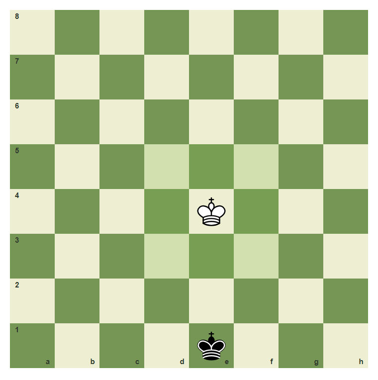
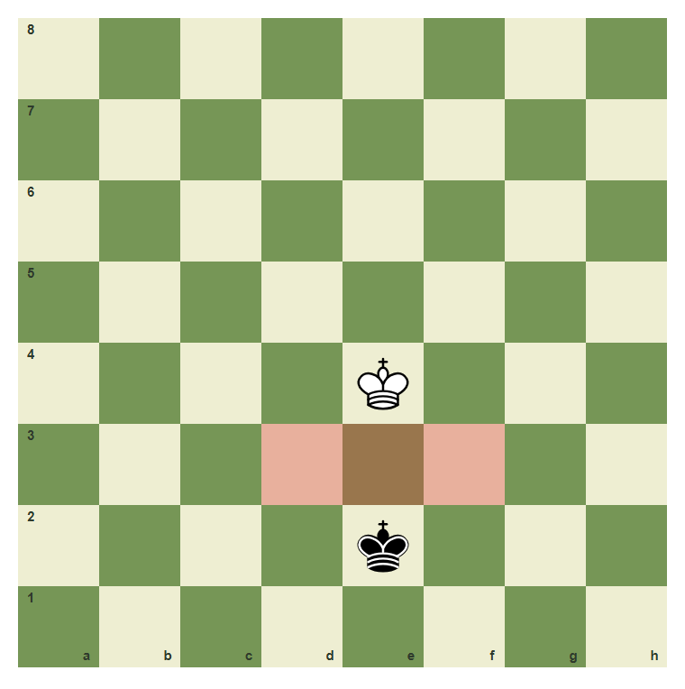
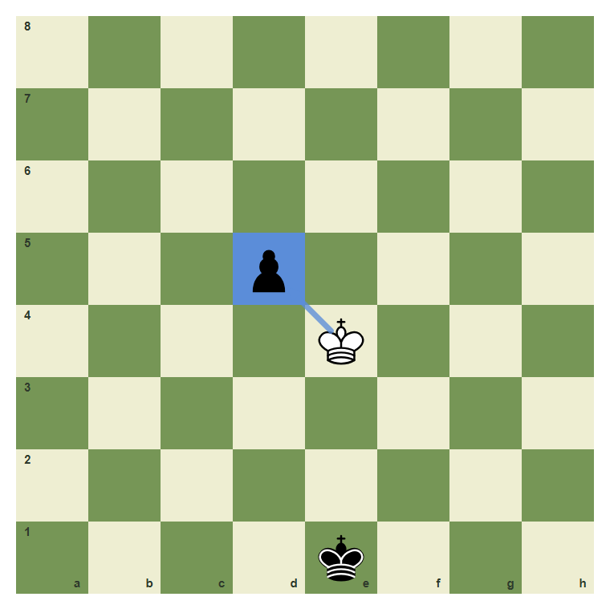
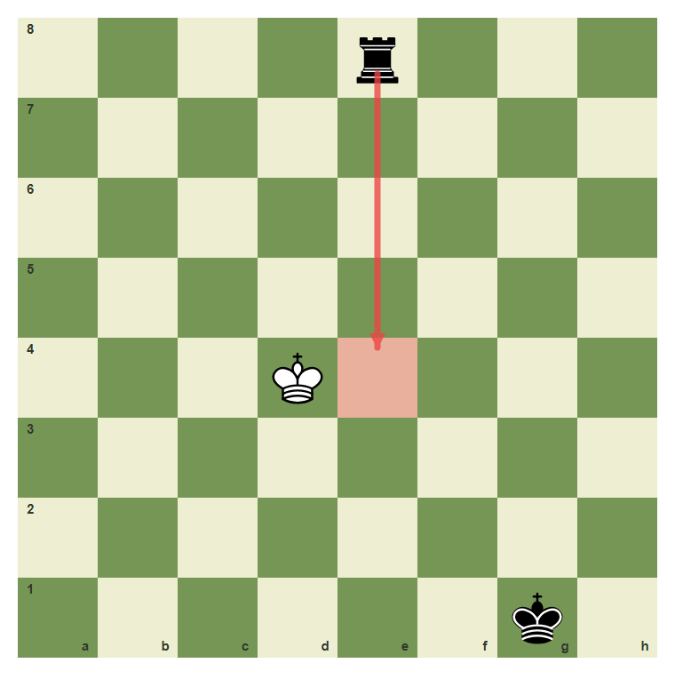
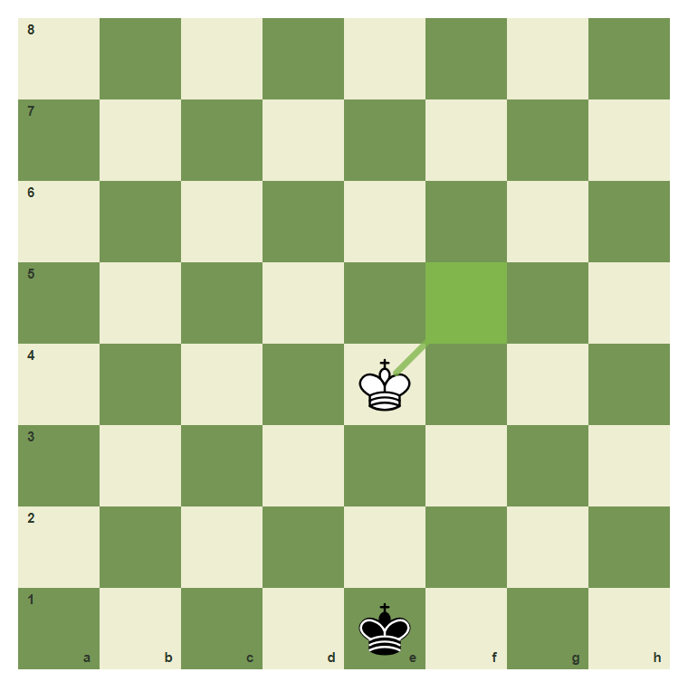

The King And The Goal
The king moves slowly, but the whole game turns around him.
- Move the king one square in any direction.
- Know that kings may never stand next to each other.
- Understand that the king may not move into danger.
- Explain why the king is never traded or captured.
The King Is The Game
Every piece can be traded except the king. You do not win by taking the king off the board. You win by attacking the king so strongly that there is no legal escape. That final position is checkmate.
The king moves one square

From e4, the king can step to any adjacent highlighted square if that square is safe.
Kings cannot touch

The kings control the squares beside them. White may not move next to the black king.
Safe Squares Matter
A king move has two questions. First, does the king move one square? Second, is the landing square safe? A one-square move is still illegal if the king walks into an attack.
The king can capture a loose piece

If the pawn on d5 is not protected, the king may capture it by moving one square diagonally.
A rook controls the e-file

The black rook controls e4, so the white king on d4 may not step onto e4.
A safe king step

e4 to f5 is a normal one-square king move in this position.
Move the king to f5
Move the white king from e4 to f5.
Common Mistake
Common mistake: walking into attack
The move from d4 to e4 looks like a legal one-square move, but e4 is controlled by the rook on e8. A king move must satisfy both rules: one square and safe.
The red square is not safe. The rook already controls it.
Chapter Checkpoint
How far does a king move?
A king normally moves:
Can kings stand next to each other?
Two kings may stand on adjacent squares:
What makes a king move illegal?
A one-square king move is illegal when: